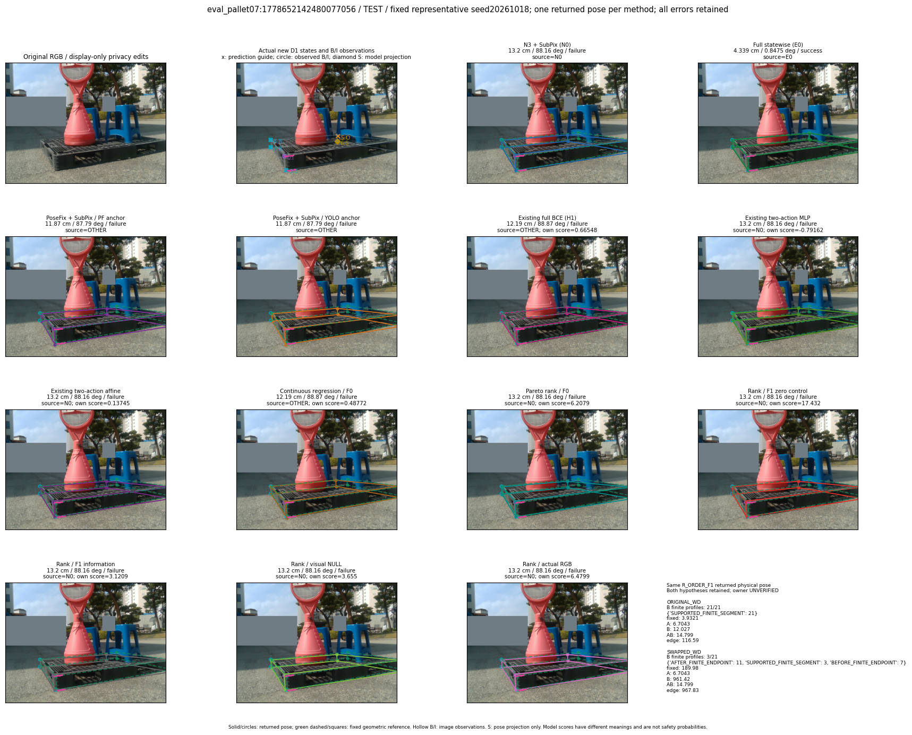
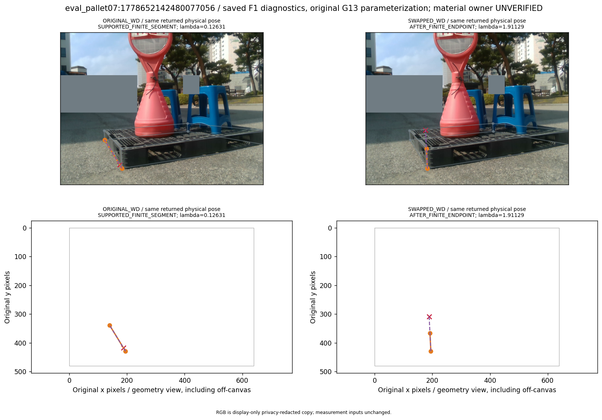
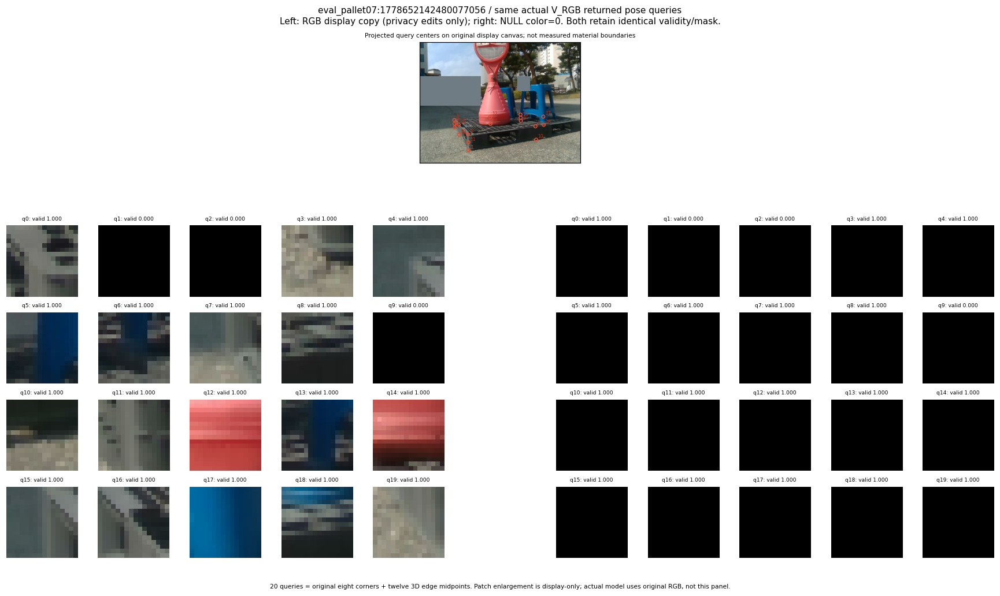

R_CONT_F0_s20261018:rotation_worsening · R_ORDER_F0_s20261018:rotation_worsening · R_ORDER_F1_ZERO_s20261018:rotation_worsening · R_ORDER_F1_s20261018:rotation_worsening · V_ORDER_NULL_s20261018:rotation_worsening · V_ORDER_RGB_s20261018:rotation_worsening
thumbnail detail support visual



실선은 반환 자세, 초록 점선은 고정 기하 참조입니다. S는 영상 관측이 아닙니다. 점수는 모델별 의미가 다르며 보정된 안전 확률이 아닙니다. 개인정보 처리는 표시 사본에만 적용했습니다.
| 방법·seed | 위치 / 회전 / 공동성공 | 실제 출처 | 선택 후보 | 각 모델 자체 점수 |
|---|---|---|---|---|
| N0 | 13.2 cm / 88.16 deg / failure | N0 | N/A | N/A |
| E0 | 4.339 cm / 0.8475 deg / success | E0 | N/A | N/A |
| E0_REGENERATED | 4.339 cm / 0.8475 deg / success | E0 | E0_REGENERATED | N/A |
| POSEFIX_SUBPIX_PF_ANCHOR | 11.87 cm / 87.79 deg / failure | OTHER | N/A | N/A |
| POSEFIX_SUBPIX_YOLO_ANCHOR | 11.87 cm / 87.79 deg / failure | OTHER | N/A | N/A |
| D1_H1_MLP_s20261018 | 12.19 cm / 88.87 deg / failure | OTHER | G13/ORIGINAL_WD/endpoint/17 | 0.6654801368713379 |
| D1_H1_MLP_s20261019 | 12.19 cm / 88.87 deg / failure | OTHER | G13/ORIGINAL_WD/endpoint/17 | 0.31107383966445923 |
| D1_H1_MLP_s20261020 | 12.19 cm / 88.87 deg / failure | OTHER | G13/ORIGINAL_WD/endpoint/17 | 0.8245999813079834 |
| D1_H1_PAIR_MLP_s20261018 | 13.2 cm / 88.16 deg / failure | N0 | N0 | -0.7916237711906433 |
| D1_H1_PAIR_MLP_s20261019 | 13.2 cm / 88.16 deg / failure | N0 | N0 | -0.22476880252361298 |
| D1_H1_PAIR_MLP_s20261020 | 13.2 cm / 88.16 deg / failure | N0 | N0 | 0.4152437746524811 |
| D1_H1_PAIR_ROLE_AFFINE_s20261018 | 13.2 cm / 88.16 deg / failure | N0 | N0 | 0.13744652271270752 |
| D1_H1_PAIR_ROLE_AFFINE_s20261019 | 13.2 cm / 88.16 deg / failure | N0 | N0 | 0.09448926895856857 |
| D1_H1_PAIR_ROLE_AFFINE_s20261020 | 13.2 cm / 88.16 deg / failure | N0 | N0 | 0.10185834765434265 |
| R_CONT_F0_s20261018 | 12.19 cm / 88.87 deg / failure | OTHER | G13/ORIGINAL_WD/endpoint/17 | 0.48771828413009644 |
| R_CONT_F0_s20261019 | 12.19 cm / 88.87 deg / failure | OTHER | G13/ORIGINAL_WD/endpoint/17 | 0.5546350479125977 |
| R_CONT_F0_s20261020 | 12.19 cm / 88.87 deg / failure | OTHER | G13/ORIGINAL_WD/endpoint/17 | 0.5693142414093018 |
| R_ORDER_F0_s20261018 | 13.2 cm / 88.16 deg / failure | N0 | N0 | 6.207854270935059 |
| R_ORDER_F0_s20261019 | 13.2 cm / 88.16 deg / failure | N0 | N0 | 5.5204572677612305 |
| R_ORDER_F0_s20261020 | 13.2 cm / 88.16 deg / failure | N0 | N0 | -5.492424011230469 |
| R_ORDER_F1_ZERO_s20261018 | 13.2 cm / 88.16 deg / failure | N0 | N0 | 17.431583404541016 |
| R_ORDER_F1_ZERO_s20261019 | 12.19 cm / 88.87 deg / failure | OTHER | G13/ORIGINAL_WD/endpoint/17 | 7.748661041259766 |
| R_ORDER_F1_ZERO_s20261020 | 13.2 cm / 88.16 deg / failure | N0 | N0 | 10.184374809265137 |
| R_ORDER_F1_s20261018 | 13.2 cm / 88.16 deg / failure | N0 | N0 | 3.120875358581543 |
| R_ORDER_F1_s20261019 | 13.2 cm / 88.16 deg / failure | N0 | N0 | 5.857372283935547 |
| R_ORDER_F1_s20261020 | 13.2 cm / 88.16 deg / failure | N0 | N0 | 4.210864543914795 |
| V_ORDER_NULL_s20261018 | 13.2 cm / 88.16 deg / failure | N0 | N0 | 3.655046224594116 |
| V_ORDER_NULL_s20261019 | 13.2 cm / 88.16 deg / failure | N0 | N0 | 1.7869389057159424 |
| V_ORDER_NULL_s20261020 | 13.2 cm / 88.16 deg / failure | N0 | N0 | 5.825138092041016 |
| V_ORDER_RGB_s20261018 | 13.2 cm / 88.16 deg / failure | N0 | N0 | 6.47993278503418 |
| V_ORDER_RGB_s20261019 | 13.2 cm / 88.16 deg / failure | N0 | N0 | 1.7750312089920044 |
| V_ORDER_RGB_s20261020 | 13.2 cm / 88.16 deg / failure | N0 | N0 | -7.239920616149902 |